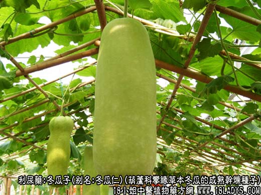
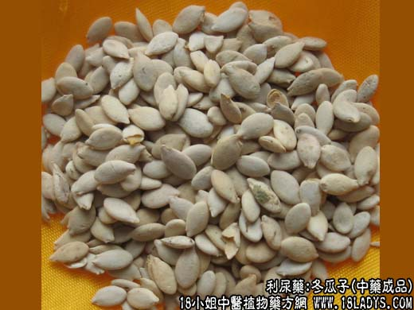
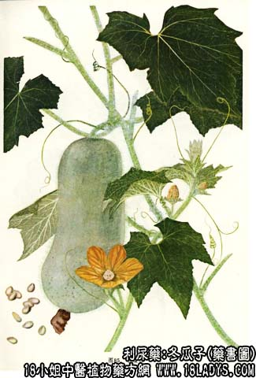

冬瓜子为较常用中药，《神农本草经》列为上品。原名瓜子。现市售有单边，双边两种。其原植物相同而是栽培品种的变异。
别名：冬瓜仁。
来源：为葫芦科一年生攀缘性草本植物冬瓜的成熟干燥种子。
产地：全国各地均有栽培。
性状鉴别：为扁平卵圆形，长约1.2~1.4厘米，宽约6~8厘米，厚约2毫米。表面黄白色。一端钝圆，另一端尖，尖端有两个突起，其一较小为种脐，另一突起稍大，上有一明显的珠孔。种子两面的边缘均有一环形边。种皮较粗糙，质较薄而软，剥去种皮厚可见有一层透明无色的膜状胚乳，紧包于两片子叶之外。子叶白色，胚根小形，朝向尖端。气无味略甜。
单边冬瓜子：外形略似双边冬瓜子而较小，长约1~1.2厘米，宽约5~7毫米。边缘光滑无环形边。种皮较厚较硬而脆。气味同上。以粒大、饱满、色白者为佳。
主要成分：含葫芦巴硷、腺嘌呤、脂肪油。
药理作用：1、利尿、消炎，故能清热除湿，散热毒痈肿。2、祛痰。
炮制：生用或炒用。
性味：甘、微寒。
归经：入脾、小肠经。
功能：清热利尿，消肿、排脓、消痰、止咳。
主治：肠痈、肺痈，水肿胀满，痰热咳嗽，白浊白带等症。
临床应用：作为治疗内痈和痰热咳嗽的辅助药。治内痈用法与薏苡仁同；治痰热咳嗽虽然效力不及栝萎仁，但仍有一定作用，常配前胡，川贝，杏仁，方入前贝杏瓜汤。
用量：6~12g，大剂可用至30g。